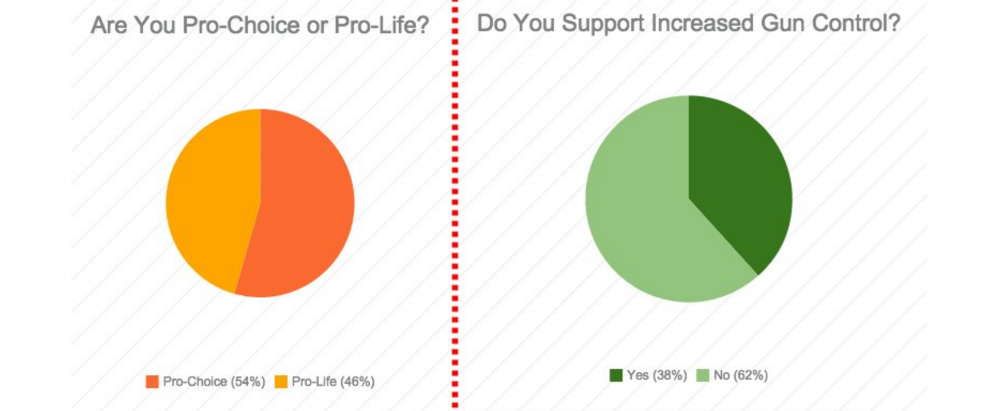
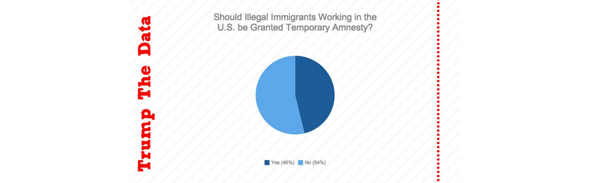

SOUTH POPULAR OPINIONS
In order to better understand what his stance is on several political topics, here is a brief summary of his life.
The South’s general opinion on abortion is a strong pro-life sentiment. The South has the highest opposition to legal abortions. The South is the only region in which the opposition of legal abortion has been increasing in recent years. The South Central region has the largest percentage people believing that abortion should be illegal in all cases with 52% according to PEW research center. The South Atlantic is 3rd with 42 believing it is illegal%, but 50% still believe it is legal. in 1995-1996, research showed that 45% of the South Central states believe abortion was illegal. This is 6 percent less than the 2013 data. The South is becoming increasingly opposed to abortion.
This trend is interesting to consider when compared to Donald Trump’s opinion on abortion. In the late 1990’s, he was a pro-choice supporter, but in recent years he has become increasingly pro-life. He credits a personal story, a couple he knew who decided not to have an abortion and were grateful they didn't, as to why he has switched his beliefs. His alignment with the general conservative and republican opinions on abortion makes sense in an election. By becoming a stronger pro-life supporter, he is becoming a favorable candidate to those in Southern states with similar views.
The South’s general opinion on gun control is steadily decreasing. The support for gun rights has been generally increasing since the mid 1990’s. Currently, the percentage of those in support of gun rights and against gun control is 51%, as compared to the 39% in 1995.
Donald Trump’s opinions on gun control have also shifted throughout the years. In the late 1990’s and early 2000’s Donald Trump was generally against gun control, but understood and supported some limitations on guns, such as assault weapons. Now he seems to be much more in favor of gun rights, and does not support many gun control limitations. He believes the current format of background checks does not work. He asserts that he is an avid supporter of the second amendment. Donald Trump’s increasing support of gun rights makes him appealing to the Southern States who are also increasingly supporting gun rights.
The South’s general opinion on immigration is generally that of the republican party. The occurrence of the “Southern Democrat” has been decreasing since the 1960’s, and is nearly extinct now, only holding influence sometimes in states like Virginia and Florida. The states of the South however are hard to classify as completely republican, because governors and senators sometimes are Democrats. The majority of the Southern States, however, voted against Obama in 2008, thus leaning Republican. According to Pew Research Center, most republicans are in favor of decreasing immigration, with 67%. 25% think that immigration should be kept at present level, and only 7% believe it should be increased. 89% of Republicans also believe that the entire system of immigration needs major changes, or needs a complete overhaul.
Donald Trump has been a strong voice on the front of immigration, in supreme support of limiting immigration. He is strongly opposed to “new people coming in”. He wants to heavily control borders, especially the Mexican American border, and believes legal immigration should be challenging. His suggestion for border control included a triple layered fence and predator drones on the border. He is also against the idea of “anchor babies” and does not support the idea that children of other countries born on American soil should be given U.S citizenship. The South is likely to support Donald Trump on his opinions of immigration, as they have similar beliefs on the issue. The strong support of immigration control is likely to make southern twitter users to support Donald Trump.